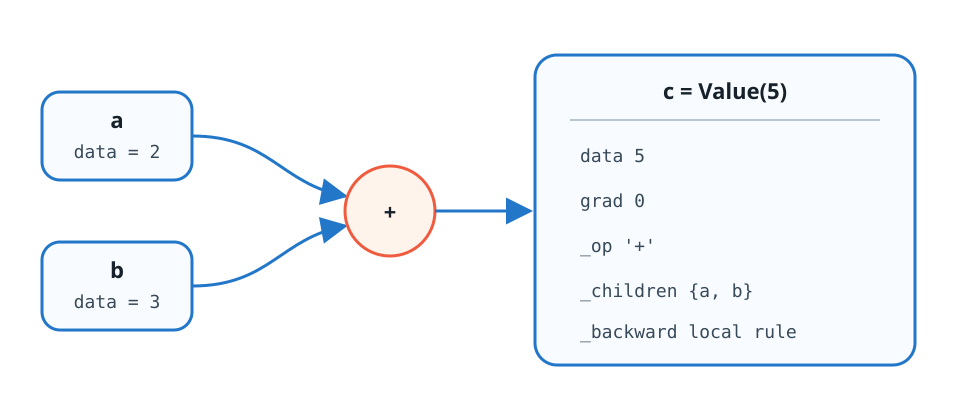
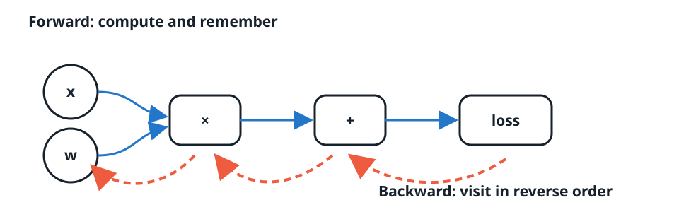
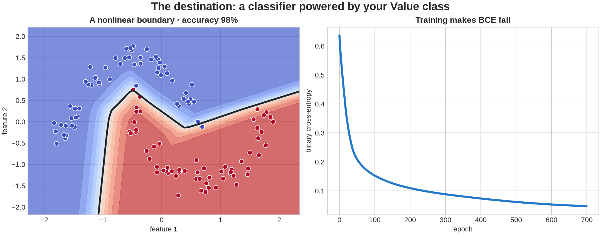

import math
import random
import numpy as np
import matplotlib.pyplot as plt
random.seed(42)
np.random.seed(42)Build Your Own Autograd Engine
Two sessions · scalar reverse-mode autodiff · neural networks · two moons
You will grow one small Value class into an engine capable of training a nonlinear classifier. Implement every TODO, then run its check immediately. Plotting, data, optimization, and the final experiment are provided.
1 — A scalar that remembers
For c = a + b, the result c must remember the exact objects a and b. Those immediate predecessors are stored in _prev (Karpathy’s implementation uses this name for the constructor argument _children). They are graph connections—not copied numbers.

_backward will eventually contain the operation-specific local derivative rule. Initially it does nothing.
class Value:
def __init__(self, data, _children=(), _op="", label=""):
# TODO 1: store float data, initialize grad to zero, convert children
# to a set, and store _op and label.
raise NotImplementedError("TODO 1")
def __repr__(self):
return f"Value(data={self.data:.4f}, grad={self.grad:.4f})"def check_todo_1():
a, b = Value(2, label="a"), Value(3, label="b")
c = Value(5, (a, b), "+", "c")
assert c.data == 5.0 and c.grad == 0.0
assert c._prev == {a, b} and c._op == "+" and c.label == "c"
assert callable(c._backward)
print("✓ TODO 1 passed: a Value remembers its data and graph parents")
check_todo_1()2 — Arithmetic creates a graph
Implement addition and multiplication. Each result must contain the forward value, both operands in _children, and the operation symbol. Coerce ordinary numbers into Value objects so expressions such as x + 2 work naturally.
# Add these methods inside Value, then rerun the class cell.
def __add__(self, other):
# TODO 2a
raise NotImplementedError("TODO 2a")
def __mul__(self, other):
# TODO 2b
raise NotImplementedError("TODO 2b")
# Paste the completed methods into Value. Also add:
# __radd__ = __add__
# __rmul__ = __mul__def check_todo_2():
a, b = Value(2), Value(-3)
c, d = a + b, a * b
assert c.data == -1 and c._prev == {a, b} and c._op == "+"
assert d.data == -6 and d._prev == {a, b} and d._op == "*"
assert (2 + a).data == 4 and (3 * a).data == 6
print("✓ TODO 2 passed: arithmetic constructs the forward graph")
check_todo_2()3 — Local backward rules and accumulation
If out = a + b, both inputs receive out.grad. If out = a*b, then a receives b.data*out.grad and b receives a.data*out.grad.
Use +=, never =. A reused value can influence the loss through several paths, and its gradient is the sum of every arriving message.
# Extend __add__ and __mul__. In each method, define a closure named _backward,
# attach it to out, and accumulate into the operands' gradients.
# TODO 3: implement both local rules inside Value.__add__ and Value.__mul__.def check_todo_3():
x = Value(3.0)
y = x * x + 2 * x # dy/dx = 2x + 2 = 8
y.grad = 1.0
# For now invoke local rules manually from output toward x.
y._backward()
for parent in y._prev:
if parent._op == "*":
parent._backward()
assert abs(x.grad - 8.0) < 1e-12, "Did you accumulate with +=?"
print("✓ TODO 3 passed: messages from shared paths accumulate")
check_todo_3()4 — Complete the scalar vocabulary
Implement the operations required by a neural network and binary cross-entropy:
__pow__, negation, subtraction, reflected subtraction, and division;exp()andlog();tanh(),sigmoid(), andrelu().
Each operation performs a forward calculation and installs its own local _backward closure. Use the output value when that makes the derivative simpler—for example, tanh'(x) = 1 - tanh²(x).
# TODO 4: add the methods listed above to Value.
# Restrict __pow__ to an int or float exponent.
# For sigmoid, use a numerically stable branch for positive/negative self.data.5 — One call to backward()
Manual invocation is fragile. First visit predecessors recursively to construct a topological ordering. Then seed the final node with gradient 1 and execute local rules in reverse order.

# Add this method inside Value.
def backward(self):
# TODO 5:
# 1. Build a topological list with depth-first search and a visited set.
# 2. Set self.grad = 1.0.
# 3. Call _backward() for nodes in reversed(topological_order).
raise NotImplementedError("TODO 5")def finite_difference(fn, x, eps=1e-6):
return (fn(x + eps) - fn(x - eps)) / (2 * eps)
def check_engine():
x = Value(0.7)
loss = ((x * x + 2 * x - 1).tanh() + x.exp().log()) / 3
loss.backward()
numeric = finite_difference(
lambda t: (math.tanh(t*t + 2*t - 1) + math.log(math.exp(t))) / 3,
0.7,
)
assert abs(x.grad - numeric) < 1e-5, (x.grad, numeric)
print(f"✓ Engine passed numerical gradient check: {x.grad:.6f}")
check_engine()6 — Compose neurons, layers, and an MLP
MLP
└── layers: [Layer, ...]
└── neurons: [Neuron, ...]
├── w: [Value, ...]
└── b: ValueEvery class is callable. A neuron computes a weighted sum plus bias, then an activation. A layer calls several neurons. An MLP sends an input through its layers. parameters() recursively exposes every learnable Value to the optimizer.
class Module:
def zero_grad(self):
for p in self.parameters():
p.grad = 0.0
def parameters(self):
return []
class Neuron(Module):
def __init__(self, nin, activation="relu"):
scale = 1 / math.sqrt(nin)
self.w = [Value(random.uniform(-scale, scale)) for _ in range(nin)]
self.b = Value(0.0)
self.activation = activation
def __call__(self, x):
# TODO 6a: weighted sum followed by relu, tanh, sigmoid, or identity.
raise NotImplementedError("TODO 6a")
def parameters(self):
# TODO 6b
raise NotImplementedError("TODO 6b")
class Layer(Module):
def __init__(self, nin, nout, activation="relu"):
self.neurons = [Neuron(nin, activation) for _ in range(nout)]
def __call__(self, x):
# TODO 6c: return a scalar for one output, otherwise a list.
raise NotImplementedError("TODO 6c")
def parameters(self):
# TODO 6d
raise NotImplementedError("TODO 6d")
class MLP(Module):
def __init__(self, nin, widths):
sizes = [nin] + widths
self.layers = [
Layer(sizes[i], sizes[i+1], "identity" if i == len(widths)-1 else "relu")
for i in range(len(widths))
]
def __call__(self, x):
# TODO 6e
raise NotImplementedError("TODO 6e")
def parameters(self):
# TODO 6f
raise NotImplementedError("TODO 6f")def check_modules():
random.seed(7)
model = MLP(2, [4, 4, 1])
out = model([0.2, -0.3])
assert isinstance(out, Value)
assert len(model.parameters()) == (2*4+4) + (4*4+4) + (4*1+1)
out.backward()
assert any(abs(p.grad) > 0 for p in model.parameters())
model.zero_grad()
assert all(p.grad == 0 for p in model.parameters())
print("✓ TODO 6 passed: MLP composes Values and exposes its parameters")
check_modules()7 — Express binary cross-entropy
The network returns a logit. Convert it to a probability with sigmoid, then express mean BCE using only Value operations. Clamping is deliberately unnecessary here because the supplied data and initialization keep the first runs away from exact 0 and 1.
def binary_cross_entropy(logits, targets):
# TODO 7: return (mean_loss, probabilities).
raise NotImplementedError("TODO 7")
def check_bce():
loss, probs = binary_cross_entropy([Value(0.0), Value(2.0)], [0, 1])
expected = (-math.log(0.5) - math.log(1 / (1 + math.exp(-2)))) / 2
assert abs(loss.data - expected) < 1e-10
loss.backward()
assert abs(probs[0].grad - 1.0) < 1e-12
print("✓ TODO 7 passed: BCE is itself a differentiable graph")
check_bce()8 — Final task: learn two moons
The remaining code is provided application infrastructure. Your classes define the model and all its gradients; the code below creates data, performs gradient descent, and visualizes what your engine learned.

This is the destination—not a result to copy. Your exact boundary and final accuracy may differ because initialization and training are stochastic, but the loss should clearly fall and the boundary should separate most points.
def make_moons(n=120, noise=0.10, seed=4):
rng = np.random.default_rng(seed)
n1 = n // 2
t1 = rng.uniform(0, np.pi, n1)
t2 = rng.uniform(0, np.pi, n - n1)
upper = np.c_[np.cos(t1), np.sin(t1)]
lower = np.c_[1 - np.cos(t2), 0.5 - np.sin(t2)]
X = np.vstack([upper, lower]) + rng.normal(0, noise, (n, 2))
y = np.r_[np.zeros(n1), np.ones(n - n1)]
order = rng.permutation(n)
return X[order], y[order]
X, y = make_moons()
X = (X - X.mean(axis=0)) / X.std(axis=0)
plt.figure(figsize=(6.5, 4.5))
plt.scatter(X[:, 0], X[:, 1], c=y, cmap="coolwarm", edgecolor="white")
plt.title("The nonlinear classification task")
plt.show()random.seed(42)
model = MLP(2, [16, 16, 1])
history = []
for epoch in range(80):
logits = [model(list(xi)) for xi in X]
loss, probabilities = binary_cross_entropy(logits, y)
model.zero_grad()
loss.backward()
learning_rate = 0.08 * (1 - 0.8 * epoch / 80)
for parameter in model.parameters():
parameter.data -= learning_rate * parameter.grad
accuracy = np.mean([(p.data >= 0.5) == target for p, target in zip(probabilities, y)])
history.append((loss.data, accuracy))
if epoch % 10 == 0 or epoch == 79:
print(f"epoch {epoch:02d} | loss {loss.data:.4f} | accuracy {accuracy:.1%}")def plot_result(model, X, y, history):
xs = np.linspace(X[:, 0].min() - .4, X[:, 0].max() + .4, 90)
ys = np.linspace(X[:, 1].min() - .4, X[:, 1].max() + .4, 90)
xx, yy = np.meshgrid(xs, ys)
scores = np.array([
model([float(a), float(b)]).sigmoid().data
for a, b in zip(xx.ravel(), yy.ravel())
]).reshape(xx.shape)
fig, axes = plt.subplots(1, 2, figsize=(12, 4.5))
axes[0].contourf(xx, yy, scores, levels=np.linspace(0, 1, 12), cmap="coolwarm", alpha=.65)
axes[0].contour(xx, yy, scores, levels=[.5], colors="#17212b", linewidths=2)
axes[0].scatter(X[:, 0], X[:, 1], c=y, cmap="coolwarm", edgecolor="white")
axes[0].set_title("Boundary learned by your engine")
axes[1].plot([v[0] for v in history], label="BCE loss")
axes[1].plot([v[1] for v in history], label="accuracy")
axes[1].set_xlabel("epoch")
axes[1].legend()
plt.show()
plot_result(model, X, y, history)Submission reflection
Answer briefly:
- Why must local backward rules use
+=rather than assignment? - What information does
_children/_prevstore, and why is storing only_opinsufficient? - Why does backpropagation require reverse topological order?
- Show one failed or surprising intermediate result and explain how you diagnosed it.
- Describe the final boundary. What feature of the MLP makes it impossible for one affine unit but possible here?